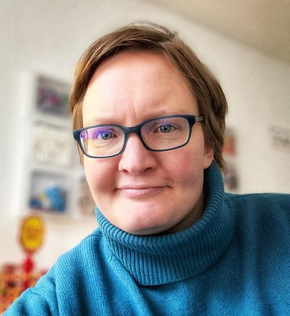

YVONNE PÖPPELBAUM

PROFILMOIN
Ich bringe Menschen ohne Technik-Hintergrund dazu, KI im Arbeitsalltag einzusetzen. Gelernte Journalistin, praxiserprobte Entwicklerin für Lernprogramme, Workshops, KI-Makerdays und Blended-Learning-Formate. Co-Regioleitung der Corporate Learning Community in Hamburg. 2026 abgeschlossen: Vollzeit-Ausbildung zur agilen KI-Managerin (DEKRA/WBS) & AI DONE RIGHT (Barbara Lampl). Ich mag Automatisierungen, interessiere mich für Security Awareness Facilitation und suche ausdauernd nach schlauen Lösungen. Seit 2026 begleite ich mit YP Learning Design for AI Adoption Teams bei der KI-Einführung und agilen Transformation. Themen: KI für die Recherche, Security Awareness für Journalist*innen, Advanced Prompting, Claude Code und GitHub.
REFERENZ
„Vorher hatten wir KI im Team nur als bessere Suchmaschine genutzt, jetzt wissen wir, wie man sie strukturiert einsetzt: erst prüfen, dann arbeiten lassen, dann kontrollieren. Man merkt deutlich, dass hier eine fundierte Methode und journalistische Genauigkeit dahinterstehen. Wir arbeiten seitdem als Team spürbar strukturierter zusammen. Wir werden definitiv wieder auf Yvonne zukommen, sobald wir bereit für den nächsten Schritt sind. Klare Empfehlung.“
DAS KANN ICH GUT
- KI-Workshop-Design & Delivery (Hands-on)
- User-Enablement-Strukturen & Lernpfade
- Blended Learning Programme (5+ Monate)
- DSGVO-Sensibilität & Regulatorik
- Advanced Prompting & Use-Case-Discovery
- Prozessanalyse & Projektsteuerung
- KI-Governance & EU AI Act (DEKRA)
- Automatisierungen mit Claude Code
LIVE UND IN FARBE
Mentorin beim größten KI-Hackathon für Frauen in Deutschland (laut AI.Women) mit 300 Teilnehmerinnen (GitHub, Claude Code, Prompting, Produktentwicklung)
KI-Enablement mit Fokus auf Claude Projects für das Team des Lehrstuhls für Medienwissenschaft.
Für diese Organisationen habe ich in den letzten Jahren frei gearbeitet: Weltreporter (Co-Geschäftsführung), Goethe-Institut, FES Medienakademie, Universität Tübingen, Lie Detectors, Spotlight Verlag (heute ZEIT Sprachen), managerSeminare, Unicum Verlag, telc, Münchner Stadtbibliothek und Rautenstrauch-Joest-Museum Köln. Angestellt war ich zuletzt bei tactile.news in Lüneburg (Workshops und Consulting) und Freischreiber (Co-Geschäftsführung).
ZERTIFIKATE & WEITERBILDUNGEN
| Zeitraum | Zertifikat | Aussteller |
|---|---|---|
| 2026 | AI DONE RIGHT | Barbara Lampl |
| 2026 | DEKRA Agile KI-Manager*in (inkl. KI-Governance, EU AI Act, ISO 42001, KI-Risiko, PSM I und PAL I) | WBS Training / DEKRA / Scrum.org |
| 2026 | Advanced Prompt Engineering for Journalists | Knight Center for Journalism in the Americas (Joe Amditis) |
| 2025 | AI & Learning Design Bootcamp – FRAME™-Methodik | Maven / Dr. Philippa Hardman |
| 2024/2025 | Designing & Facilitating Learning Spaces I + II | KAOSPILOT |
| 2024 | Generative AI for Media Professionals Masterclass | Maven (Jeremy Caplan & Nikita Roy) |
| 2019 | Train-the-Trainer | Reporter-Akademie, Berlin |
KONTAKT
Mail: info (at) poeppelbaum.eu
LinkedIn: https://www.linkedin.com/in/yvonnepoeppelbaum/
GitHub: https://github.com/poeppi